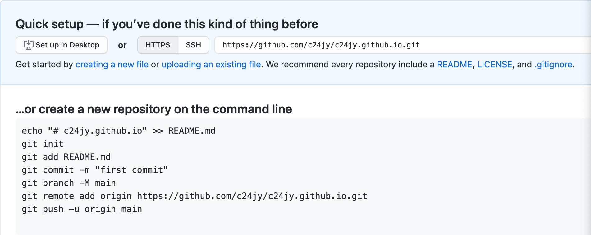

-
Open your Terminal:
On your computer go to the üîç in the upper right corner. Search for the "terminal". The terminal is a way to navigate your computer from the "back end" For instance, all of the folders on your desktop which are made to look like folders...they are an illusion that Apple made in order to help it easier to navigate you navigate your computer. They're called a graphical interface. In your terminal, you're going to navigate your folders without the graphical interface.
-
In your terminal navigate to your Username.github.io folder:
The way we "go down a level" from your top folder is by typing "cd" which means "change directory." Following it, we type "./" which means "go down a level into a folder in this folder." to get to your username.github.io folder on your computer, you first have to go into your desktop folder, than into your repositories folder, and then into your username.github folder. It'll look something like this except with your username.
cd ./desktop/repositories/yourUserName.github.io
Press the return key AND MAKE SURE that you're actually IN your username.github.io folder. You'll know this because before the curser and your username in your terminal will be the name of the folder username.github.io
- Connect your folder to the internet:
Paste in this code, which will connect your folder to your online repository by putting in the folder an invisible "git" file which will track all the changes so that every time you make changes to your future code, it will know that you made those changes. It is the text under the heading:
…or push an existing repository from the command line

- Push your first website so that it actually shows up!:
In class, you wil have made your first codesketch called index.html. Drag that file into your username.github.io folder. Make sure you have this "makefile" file also downloaded and put in your username.github.io folder. In your terminal type the following and press the return key:
Command to put into terminal:
make git m="message that describes what you've changed in the folder"
- You might need to go into the settings of the repository and set "github pages" to master or main. (This will display your masterbranch).